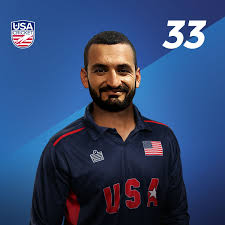

About Cricket
Cricket is a bat-and-ball game played between two teams of eleven players on a field at the center of which is a 22-yard pitch with a wicket at each end, each comprising two bails balanced on three stumps.
Star Players
Meet some of the best cricket players!
Gallery
Contact Us
For inquiries and feedback, please email us at info@cricketfanpage.com.